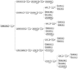
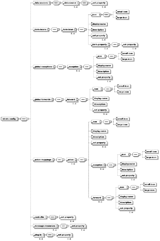
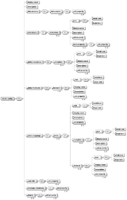

| Eclipse Corner Article |

Summary
This article will guide you through an example where an EMF model is created without serialization and the serialization is done with the framework from the WTP plugin org.eclipse.wst.common.emf.Daniel Rohe
October 10, 2005
The WTP project provides a huge collection of plug-ins for developing web applications. For developing J2EE applications, the developers of the WTP have created EMF models for the deployment descriptors like ejb-jar.xml or web.xml. These EMF models work with different versions of these deployment descriptors and provide a single API to access and edit the descriptors. Using this API, several tools that work with these descriptors have been developed.
WTP includes a framework to serialize the EMF model, but unfortunately it is not very well documented. It provides a facility to load and store EMF models into XML documents that have slightly different document type definitions. In this article I will explain the use of this framework for serialization of an EMF model based on different versions of an XML document. I hope my article helps you to understand the framework so you can use it with your own model.
The EMF model used in this article is created from the latest version of the Document Type Definition (DTD) of the Apache Struts configuration file. The EMF model contains classes that reflect the main DOM elements from the DTD. The following pictures illustrate the different DTDs and the single EMF model. The first three pictures contain a graphical notation of the three DTDs, whereas the last picture contains a class diagram with classes and data types from the EMF model.
|  |  |  |
As you can see in the first three pictures, each version differs slightly from the others. The EMF model reflects the latest version by containing the elements from all previous DTD versions. In the EMF model I've extracted some base functionality in abstract classes. So the Configurable class contains only a reference to the SetPropertyType class which represents a set-property element. The other change is the introduction of the class Visualizable that contains the properties necessary for displaying the element in a graphical editor. Another important object to note here is the class StrutsConfigType. This class represents the struts-config element from the configuration file. The StrutsConfigType class is the root element in the containment hierarchy like the struts-config element in the DOM-tree.
There are two alternatives to create the EMF model from the DTDs. The first one is to convert the DTD into an XML Schema Definition (XSD) which is the input for the EMF import wizard. The wizard creates the EMF model based on the XSD. It also creates constraints used for validation based on the constraints defined in the XSD. The other alternative is the handcrafted way. Here you create the model with an editor by hand. The next step is to create the generator model (GenModel). This model contains the information for transforming the EMF model into Java. In this model it is important to set the resource type property of the root package to "None". Otherwise the handwritten classes will be overwritten by regeneration. After setting the property a right mouse click on the root element in this model and choosing generate model code from the context menu generates the Java code from the model.
This section describes the mapping framework introduced with the WTP project in the plug-in org.eclipse.wst.common.emf. The framework helps to translate EMF models into XML documents and vice-versa. To translate an EMF model into a XML document you need some mapping definitions and a renderer capable of reading from and writing to the XML document using the mapping definitions. The plug-in provides two renderers. The first one (EMF2SAXRenderer) uses SAX to load and a Transformer to store the EMF model. The second renderer (EMF2DOMRenderer) uses DOM for serialization of the EMF model. This renderer also creates an adapter that synchronizes the DOM tree and the model after any change is made either one. These classes can all be used as provided. All that you have to do is to implement the mappings for serialization. This is done by means of the Translator class and its subclasses.
The Translator class stores information about a model object and its representation in the DOM tree of the XML document. The style integer in the Translator class contains the mapping information. It contains Bits that represent different mapping styles that affect how the model object is stored and how it is read from XML. Not all style bits are documented, therefore I will give a short description of each bit in the following table.
| DOM_ATTRIBUTE | indicates that the EMF model object is rendered as attribute of a XML element |
| EMPTY_TAG | indicates that the attribute or reference is rendered as empty tag |
| CDATA_CONTENT | indicates that the EMF model object is rendered as CDATA in XML |
| END_TAG_NO_INDENT | indicates that the end tag should not be indented |
| BOOLEAN_LOWERCASE | indicates that the boolean attribute of a model object is rendered with a lowercase string and not with "True" or "False" |
| ENUM_FEATURE_WITH_HYPHENS | indicates that the model object is an enum that contains hyphens; the hyphens are converted to underscores |
| EMPTY_CONTENT_IS_SIGNIFICANT | just as the name says, indicates that empty content is significant |
| COMMENT_FEATURE | indicates that the content of the EMF feature is in the first XML comment node in front of the XML element of the EMF model object |
| UNSET_IF_NULL | unsets the model object if the value is null |
To map an EMF class to a XML element you have to define a translator. The renderer uses the translator for mapping the EMF object into an XML element. For simplicity the next code listing shows the definition of a translator for an attribute of an EMF class mapped to an attribute of an XML element.
new Translator("property",
STRUTS_CONFIG_PACKAGE.getSetPropertyType_Property(),
Translator.DOM_ATTRIBUTE)
This listing defines a single translator that maps the attribute property of an XML element to the EMF attribute property of the EMF class SetPropertyType. This mapping is the simplest one because it does not define any containment hierarchy. The mapping says nothing about what XML element contains the attribute property or which EMF class contains the instance of the EMF class SetPropertyType. The plug-in provides a very generic implementation for the mapping with the class GenericTranslator. This translator should be used for mapping EMF classes to XML elements. The next listing shows an example that uses an instance of GenericTranslator to map an XML element with attributes to an EMF class.
GenericTranslator translator = new GenericTranslator(
"set-property",
STRUTS_CONFIG_PACKAGE.getConfigurable_SetProperty());
translator.setChildren(new Translator[] { IDTranslator.INSTANCE,
new Translator("property",
STRUTS_CONFIG_PACKAGE.getSetPropertyType_Property(),
Translator.DOM_ATTRIBUTE),
new Translator("value",
STRUTS_CONFIG_PACKAGE.getSetPropertyType_Value(),
Translator.DOM_ATTRIBUTE) });
The first three lines define the generic translator for the EMF class SetPropertyType. The first parameter (set-property) of the constructor defines the name of the XML element that is mapped to the EMF class. The second parameter defines the reference containing an object of the SetPropertyType class. The rest of the listing shows the creation of the mappings for the EMF attributes. These mappings are added as children to the translator for mapping the SetPropertyType class. This translator can then be used as a child translator elsewhere. In the example the translator is used for each Configurable subclass.
An important aspect is the possibility of using paths for referencing XML elements. In the Visualizable class are two paths used for the EMF attribute smallIcon and largeIcon. They both are mapped to the XML element small-icon and large-icon which are children of the XML element icon. The next listing shows the mapping of the EMF attribute largeIcon to a XML element large-icon.
protected static Translator LARGE_ICON_TRANSLATOR = new Translator( "icon/large-icon", STRUTS_CONFIG_PACKAGE.getVisualizable_LargeIcon());
Another important aspect is extension of the RootTranslator class. This abstract class is used for mapping the root XML element to an EMF class. The constructor of the class RootTranslator takes two arguments. The first defines the root XML element and the second the EMF class. In the listing below the XML element struts-config is mapped to the EMF class StrutsConfigType, the root in the containment hierarchy in our model.
public StrutsConfigTranslator() {
super("struts-config", STRUTS_CONFIG_PACKAGE.getStrutsConfigType());
}
This class has a method getChildren() which returns the children of the root translator. The method has two arguments. The first contains the element to be mapped into XML and the second is a version identifier for the XML document. The method must be overriden to provide the child mappings of the root translator. The next listing shows the overridden method. It returns the child translators based on the version identifier.
public Translator[] getChildren(Object target, int versionID) {
switch (versionID) {
case StrutsConfigConstants.VERSION_1_0_ID:
if (children10 == null) {
children10 = create10Children();
}
return children10;
case StrutsConfigConstants.VERSION_1_1_ID:
if (children11 == null) {
children11 = create11Children();
}
return children11;
case StrutsConfigConstants.VERSION_1_2_ID:
default:
if (children12 == null) {
children12 = create12Children();
}
return children12;
}
}
The listing shows a switch statement for creation of the child mappings. The create methods creates the mappings starting from the root mapping. The first parameter of the getChildren method could also be used to create mappings for specific elements. The next listing shows the create method for the version 1.2 which returns an array of translators for each child XML element of the root element.
protected Translator[] create12Children() {
return new Translator[] { IDTranslator.INSTANCE,
new Translator(StrutsConfigXmlMapping.DISPLAY_NAME,
STRUTS_CONFIG_PACKAGE.getStrutsConfigType_DisplayName()),
new Translator(StrutsConfigXmlMapping.DESCRIPTION,
STRUTS_CONFIG_PACKAGE.getStrutsConfigType_Description()),
createDataSourcesTranslator(StrutsConfigConstants.VERSION_1_2_ID),
createFormBeansTranslator(StrutsConfigConstants.VERSION_1_2_ID),
createGlobalExceptionsTranslator(),
createGlobalForwardsTranslator(StrutsConfigConstants.VERSION_1_2_ID),
createActionMappingsTranslator(StrutsConfigConstants.VERSION_1_2_ID),
createControllerTranslator(),
createMessageResourcesTranslator(),
createPlugInTranslator() };
}
For more mapping examples or the complete root translator look at the source code of the StrutsBox project.
In this section I will show how the mappings should be integrated into EMF resource handling. For this purpose, an abstract EMF resource
public StrutsConfigResourceImpl(Renderer renderer) {
super(renderer);
}
public StrutsConfigResourceImpl(URI uri, Renderer renderer) {
super(uri, renderer);
}
These two constructors are used to create the resource. The original resource constructor is deprecated because the given renderer is used for the translation of the XML document to the EMF model.
protected String getDefaultSystemId() {
return StrutsConfigConstants.STRUTS_CONFIG_SYSTEM_ID_1_2;
}
protected String getDefaultPublicId() {
return StrutsConfigConstants.STRUTS_CONFIG_PUBLIC_ID_1_2;
}
protected int getDefaultVersionID() {
return StrutsConfigConstants.VERSION_1_2_ID;
}
These three methods return the default properties after the resource is loaded. The first two methods are for the XML document type definition and the last one is used for retrieving the version identifier used by the translator to create the mappings.
public Translator getRootTranslator() {
return StrutsConfigTranslator.getInstance();
}
This method connects the resource with the translator. To retrieve the correct mappings, this method is called from the renderer during serialization.
public String getDoctype() {
return StrutsConfigXmlMapping.STRUTS_CONFIG;
}
The method returns the name of the root XML element in the document.
public void setDoctypeValues(String publicId, String systemId) {
super.setDoctypeValues(publicId, systemId);
// here we decide based on the given public id which
// struts-config version gets loaded
int version = StrutsConfigConstants.VERSION_1_2_ID;
if (StrutsConfigConstants.STRUTS_CONFIG_PUBLIC_ID_1_0.equals(publicId)) {
version = StrutsConfigConstants.VERSION_1_0_ID;
}
if (StrutsConfigConstants.STRUTS_CONFIG_PUBLIC_ID_1_1.equals(publicId)) {
version = StrutsConfigConstants.VERSION_1_1_ID;
}
setVersionID(version);
}
This method is called after the XML document type definition is read from the XML document. It determines the version identifier used to retrieve the correct mappings from the root translator.
There is also an adapter which sets the version attribute of the root object in the EMF model. The version attribute is taken from the version identifier determined from the document type definition. The code for this adapter is shown in the following listing.
private class RootVersionAdapter extends AdapterImpl {
public boolean isAdapterForType(Object type) {
return super.isAdapterForType(type);
}
public void notifyChanged(Notification msg) {
if (msg.getFeatureID(null) == RESOURCE__CONTENTS
&& msg.getEventType() == Notification.ADD) {
((StrutsConfigResourceImpl) msg.getNotifier()).syncVersionOfRootObject();
((Notifier) msg.getNotifier()).eAdapters().remove(this);
}
}
}
public String getVersionString() {
switch (getVersionID()) {
case StrutsConfigConstants.VERSION_1_0_ID:
return StrutsConfigConstants.VERSION_1_0_TEXT;
case StrutsConfigConstants.VERSION_1_1_ID:
return StrutsConfigConstants.VERSION_1_1_TEXT;
case StrutsConfigConstants.VERSION_1_2_ID:
default:
return StrutsConfigConstants.VERSION_1_2_TEXT;
}
}
protected void syncVersionOfRootObject() {
StrutsConfigType strutsConfig = (StrutsConfigType) getRootObject();
if (strutsConfig != null) {
String version = strutsConfig.getVersion();
String newVersion = getVersionString();
if (!newVersion.equals(version)) {
strutsConfig.setVersion(newVersion);
}
}
}
protected void initializeContents() {
super.initializeContents();
eAdapters().add(new RootVersionAdapter());
}
The adapter class synchronizes the version attribute of the root object after it is added to the resource. To synchronize the version attribute during initialization, the class is added to the adapters of the resource in the method initializeContents. After the root object is added to the resource the adapter is notified. Then it calls the method syncVersionOfRootObject, where the version string is determined by the version identifier. The version string is then set as version attribute of the root object.
Normally a resource factory creates a resource in the EMF framework. So the next step is to create the resource factory. The factory class is very simple. It extends TranslatorResourceFactory and implements a single method for resource creation. The following listing shows the resource factory from the example.
public class StrutsConfigResourceFactoryImpl extends TranslatorResourceFactory {
public StrutsConfigResourceFactoryImpl() {
super(EMF2DOMRendererFactoryDefaultHandler.INSTANCE
.getDefaultRendererFactory());
}
protected TranslatorResource createResource(URI uri, Renderer aRenderer) {
return new StrutsConfigResourceImpl(uri, aRenderer);
}
}
The model editor can be generated from the GenModel. After the editor has been generated, the constructor must be changed. The resource factory must be added to the resource set of the editing domain for a specific file extension.
public StrutsConfigEditor() {
super();
...
// Create the editing domain with a special command stack.
//
editingDomain = new AdapterFactoryEditingDomain(adapterFactory,
commandStack, new HashMap());
editingDomain.getResourceSet()
.getResourceFactoryRegistry().getExtensionToFactoryMap()
.put("xml", new StrutsConfigResourceFactoryImpl());
}
After changing, the editing domain creates our resource factory for files with the extension xml. Now the editor must be registered for this file extension in the Eclipse extension registry. To achieve this goal, you have to set the extensions attribute of the editor extension to "xml".
The executable plug-ins with source code could be downloaded from here.
To discuss or report problems in this article see bug 100762.
IBM is trademark of International Business Machines Corporation in the United States, other countries, or both.
Java and all Java-based trademarks and logos are trademarks or registered trademarks of Sun Microsystems, Inc. in the United States, other countries, or both.
Microsoft and Windows are trademarks of Microsoft Corporation in the United States, other countries, or both.
Other company, product, and service names may be trademarks or service marks of others.
{kind=link}
{kind=link}
{kind=link}
{kind=link}
{kind=link}